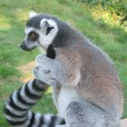

狐猴是小型灵长目动物，通常称为“原猴类”（意思是比猴子出现得更早）。狐猴的原产地是非洲东海岸的马达加斯加，及其附近的科摩罗群岛。狐猴体型可以很小，而最大可达 15 或 20 磅。它们的平均寿命为 18 年，是寿命最短的灵长目动物。
狐猴属灵长目，与猿和人类接近。大多数狐猴拥有长长的尖鼻子，嗅觉异常灵敏。狐猴皮毛颜色不一，有红褐色、灰色等。最小的狐猴是侏儒鼠狐猴，其体重不到 1 磅，最大是光面狐猴，体重可达 20 磅。狐猴嗅觉灵敏，视觉敏锐（即使在夜间）。

大多数狐猴吃热带雨林中的水果、树叶和其他植物。有些喜欢吃花蜜，还有些只吃竹子。指猴 (aye-aye) 喜欢用它像爪子一样的中指从树干中扣食昆虫。灰狐猴喜欢觅食树顶的竹笋。环尾狐猴喜欢吃花、草本植物和更小的动物。生活在动物园的狐猴可以享受到美味的素食饼干。

狐猴通过灵敏的嗅觉来进行沟通。它们的屁股和脚底有臭腺，所到之处都会留下气味。其他狐猴闻到这些气味便知道已有狐猴来过。狐猴也会摆动整条大尾巴来进行交流。尾巴还可以帮助它们在树上来回跳跃时保持身体平衡。
科学家们普遍认为目前大约存活 88 种狐猴，分为五个狐猴大类。以下是狐猴的一些有趣特征：
| 狐猴 | 有趣特征 |
|---|---|
| 鼠狐猴 | 最小的灵长目动物。晚上活动，栖息在树上。 |
| 环尾狐猴 | 因其显著的黑白色尾巴而最为人知。喜好群居，群居成员最多可达 30 只，由雌性领导。 |
| 鼬狐猴 | 晚上活动，栖息在树上。在地面上，它们像袋鼠一样跳跃。 |
| 光面狐猴 | 最大的狐猴，日行性动物。腿非常强壮，在树顶一跃可达 30 英尺。 |
| 指猴 (Aye-aye) | 世界上最大的夜行灵长目动物。通常单独生活而非群居。脸部长得更像啮齿类动物。 |
科学家们原以为狐猴最早出现在非洲大陆，当时马达加斯加还没有从大陆分离出来成为岛屿。但是，最近的发现表明马达加斯加在狐猴出现之前已经从非洲大陆分离出来。所以，科学家们现在认为，狐猴是通过漂浮的植物迁移到岛上，并远离其他灵长目动物，独自在岛上生活和进化。
作为独自生活在马达加斯加的灵长目动物，狐猴进化成种类庞大的物种。化石表明，与现代狐猴相比，有些早期狐猴种类体型非常大。据估计，一种已经绝迹的狐猴体重约达 350~440 磅，相当于成年男性大猩猩。
注：以下仅供练习；返回的信息不会被收集。